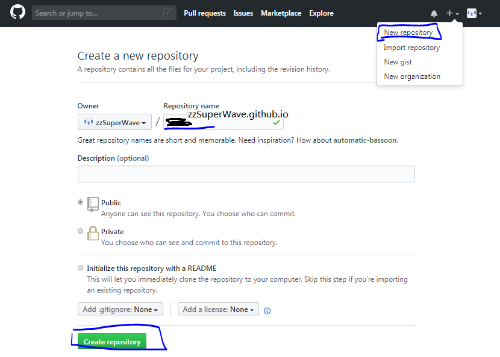
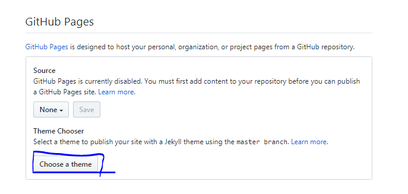
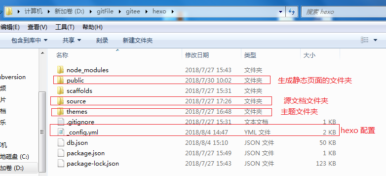

Hexo搭建个人博客网站详细流程
撰写于 2018-07-30 修改于 2018-08-06 分类 资料
目录
一、准备工作
二、搭建博客(远程与本地)
三、发布博客
四、更换主题
五、博客网站美化
六、在不同电脑管理hexo博客
七、遇到问题
八、其他方案
一、准备工作
1.了解Hexo
Hexo是高效的静态站点生成框架，她基于Node.js。 通过 Hexo 你可以轻松地使用 Markdown 编写文章，除了 Markdown 本身的语法之外，还可以使用 Hexo 提供的标签插件来快速的插入特定形式的内容，而且相对于其他框架，Hexo在速度上也有很大优势。
2.搭建Node.js环境
我们了解到Hexo基于Node.js的，那么我们搭建博客网站首先需要安装Node.js环境。 Node.js 是一个基于 Chrome V8 引擎的 JavaScript 运行环境，可以在非浏览器环境下，解释运行 JS 代码。
- 下载地址：http://nodejs.cn/download
- 配置环境变量: 现在官网最新应该是安装时自动帮你配置的,如果不成功可以自行百度如何配置
- 测试安装：命令行使用node -v 、mpm -v，查看显示版本号即成功。
3.安装Git版本工具
Git是目前世界上最流行的分布式版本控制系统，是的，没有之一。使用Git可以帮助我们把本地的网页和文章等内容提交到Gihub上，实现同步。
- 下载地址：https://git-scm.com/downloads
- Windows系统需下载，Mac系统因为自带Git无需操作。
- 安装教程: https://blog.csdn.net/sishen47k/article/details/80211002
- 测试安装：git - -version，查看显示版本号即成功。
4.安装Hexo博客框架工具
Hexo是一个建站工具，可以帮助我们快速生成基本的博客文件，安装它需要在控制台下使用如下命令：
打开Git Bash工具（前提确保Node.js已经安装，环境配置OK）
1
$ npm install -g hexo
安装不成功: 因为防火墙的缘故，很多境外网站被禁了npm可能要翻墙了,换国内镜像源试试。
1
2
3
4
5
6#设置镜像资源
npm config set registry="http://registry.cnpmjs.org"
# 安装hexo
npm install hexo-cli g
# 初始化博客文件夹
hexo init blog
5.注册代码托管平台 (Github账号/gitee/coding)
gitHub是一个面向开源及私有软件项目的托管平台，因为只支持git 作为唯一的版本库格式进行托管，故名gitHub。这里用到Github，是因为我们需要通过Github得到自己的博客网站域名，而且需要使用gitHub同步我们个人博客的相关文件。
码云(gitee.com)是开源中国推出的代码托管平台,支持 Git 和 SVN,提供免费的私有仓库托管。由于github是国外的网站 访问肯定没有国内的稳定,我是把静态页面托管到gitee上的
Coding 是一个面向开发者的云端开发平台 [1] ，目前提供代码托管，运行空间，质量控制，项目管理等功能。此外，还提供社会化协作功能，包含了社交元素，方便开发者进行技术讨论和协作。
注册流程：https://www.baidu.com，百度一下，你就知道啦。
二、搭建博客
1.开启GitHub Pages服务(托管代码的服务,这边以github为例)
搭建我们的个人博客需要一个唯一的域名，然后把我们的网站发不上去。当然我们可以申请购买一个域名来使用，但是在不是太必要的情况下，我们也可以通过Github Pages获得一个免费使用的域名.
另外gitee和coding也有提供类似的服务。
创建一个repo，名称为yourname.github.io, 其中yourname是你的github名称，按照这个规则创建才有用哦，如下：

点击Create Repository之后，随后选择Setting进入设置，找到Github Pages如下：
任意选择一个theme开启服务

*开启后可以发现出现服务地址点击可以进去访问服务主页
2.创建本地博客项目
上述的步骤相当于我们使用Github page，创建了一个默认的博客页，并且得到了一个可外部访问的域名。但是这个博客页很Low。我们的目的是创建自己个性化的博客网站，所以我们使用Hexo在本地先创建一个本地博客站点，优化后再把它部署到github上。接下来我们使用git bash命令在本地一个合适的位置创建博客项目文件夹如下：1
2# 初始化博客文件夹
hexo init hexo
生成文件如下

初始化后的hexo项目中 source文件夹下默认有_posts(文档文件夹)/hello_world.md(hello_world页面)
接下来我们生成静态html文件 继续使用git bash命令在本地一个合适的位置创建博客项目文件夹如下：1
2
3
4
5
6
7
8
9
10
11
12
13
14
15
16
17# 生成静态HTML页面
$ hexo g
INFO Start processing
INFO Files loaded in 456 ms
INFO Deleted: 2018/07/30/Hexo搭建个人博客网站详细流程/p1.PNG
INFO Generated: 2018/07/30/Hexo搭建个人博客网站详细流程/index.html
INFO Generated: 2018/07/30/Hexo搭建个人博客网站详细流程/p2_1_1.PNG
INFO Generated: 2018/07/30/Hexo搭建个人博客网站详细流程/p2_1_2.PNG
INFO Generated: 2018/07/30/Hexo搭建个人博客网站详细流程/p2_1_4.PNG
INFO Generated: 2018/07/30/Hexo搭建个人博客网站详细流程/p2_1_3.PNG
INFO Generated: 2018/07/30/Hexo搭建个人博客网站详细流程/p2_2_1.PNG
INFO 6 files generated in 582 ms
# 启动hexo本地服务
$ hexo s
INFO Start processing
INFO Hexo is running at http://localhost:4000/MyBlog/. Press Ctrl+C to stop.
INFO Catch you later
在本地浏览器上输入 http://localhost:4000 即可查看本地项目的博客首页
(想要酷炫的blog还得自行配置theme)
3.同步Github,允许公共访问(准备将项目上传到github)
在本地我们已经搭建了博客，但是还只能自己本地访问。若要别人也能看到，那就需要我们将其同步部署到GitHub上了。还记得我们之前准备的Github仓库吗，这里就要用到了。
首先找到我们的博客仓库，并拷贝仓库地址：
这边推介用ssh的方式
然后修改本地博客目录的配置：
修改本次博客根目录下的_config.yml文件，修改deploy下的配置如下(注意冒号后面保留空格)：1
2
3
4deploy:
type: git
repo: git.com:zzSuperWave/test.git
branch: master
生成本地ssh密钥
在gitbash命令中输入 $ cd ~/.ssh 查看是否存在密钥 若无
输入 ssh-keygen -t rsa -C “Name” 生成密钥
#找到生成的 id_rsa.pub 文件,复制里面的内容在github中添加ssh密钥
#在github中添加ssh密钥 Title随便写 Key就是复制的内容
#添加完毕之后在gitbash命令中输入执行ssh -T git@github.com查看是否连接成功1
2$ ssh -T git.com
Hi zzSuperWave! You've successfully authenticated, but GitHub does not provide shell access.